4 Transform Tables
This chapter includes the following recipes:
- Arrange rows by value in ascending order
- Arrange rows by value in descending order
- Filter rows with a logical test
- Select columns by name
- Drop columns by name
- Select a range of columns
- Select columns by integer position
- Select columns by start of name
- Select columns by end of name
- Select columns by string in name
- Reorder columns
- Reorder columns without naming each
- Rename columns
- Return the contents of a column as a vector
- Mutate data (Add new variables)
- Summarise data
- Group data
- Summarise data by groups
- Nest a data frame
- Combine transform recipes
- Join data sets by common column(s)
- Find rows that have a match in another data set
- Find rows that do not have a match in another data set
What you should know before you begin
The dplyr package provides the most important tidyverse functions for manipulating tables. These functions share some defaults that make it easy to transform tables:
dplyr functions always return a transformed copy of your table. They won’t change your original table unless you tell them to (by saving over the name of the original table). That’s good news, because you should always retain a clean copy of your original data in case something goes wrong.
You can refer to columns by name inside of a dplyr function. There’s no need for
$syntax or"". Every dplyr function requires you to supply a data frame, and it will recognize the columns in that data frame, e.g.summarise(mpg, h = mean(hwy), c = mean(cty))This only becomes a problem if you’d like to use an object that has the same name as one of the columns in the data frame. In this case, place
!!before the object’s name to unquote it, dplyr will skip the columns when looking up the object. e.g.hwy <- 1:10
summarise(mpg, h = mean(!!hwy), c = mean(cty))
Transforming a table sometimes requires more than one recipe. Why? Because tables are made of multiple data structures that work together:
- The table itself is a data frame or tibble.
- The columns of the table are vectors.
- Some columns may be list-columns, which are lists that contain vectors.
Each tidyverse function tends to focus on a single type of data structure; it is part of the tidyverse philosophy that each function should do one thing and do it well.
So to transform a table, begin with a recipe that transforms the structure of the table. You’ll find those recipes in this chapter. Then complete it with a recipe that transforms the actual data values in your table. The Combine transform recipes recipe will show you how.4.1 Arrange rows by value in ascending order
You want to sort the rows of a data frame in ascending order by the values in one or more columns.
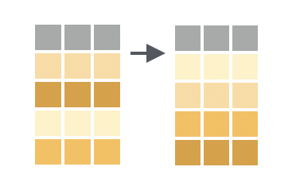
Solution
mpg %>%
arrange(displ)## # A tibble: 234 x 11
## manufacturer model displ year cyl trans drv cty hwy fl class
## <chr> <chr> <dbl> <int> <int> <chr> <chr> <int> <int> <chr> <chr>
## 1 honda civic 1.6 1999 4 manu… f 28 33 r subc…
## 2 honda civic 1.6 1999 4 auto… f 24 32 r subc…
## 3 honda civic 1.6 1999 4 manu… f 25 32 r subc…
## 4 honda civic 1.6 1999 4 manu… f 23 29 p subc…
## 5 honda civic 1.6 1999 4 auto… f 24 32 r subc…
## 6 audi a4 1.8 1999 4 auto… f 18 29 p comp…
## 7 audi a4 1.8 1999 4 manu… f 21 29 p comp…
## 8 audi a4 q… 1.8 1999 4 manu… 4 18 26 p comp…
## 9 audi a4 q… 1.8 1999 4 auto… 4 16 25 p comp…
## 10 honda civic 1.8 2008 4 manu… f 26 34 r subc…
## # … with 224 more rowsDiscussion
arrange() sorts the rows according to the values of the specified column, with the lowest values appearing near the top of the data frame. If you provide additional column names, arrange() will use the additional columns in order as tiebreakers to sort within rows that share the same value of the first column.
mpg %>%
arrange(displ, cty)## # A tibble: 234 x 11
## manufacturer model displ year cyl trans drv cty hwy fl class
## <chr> <chr> <dbl> <int> <int> <chr> <chr> <int> <int> <chr> <chr>
## 1 honda civic 1.6 1999 4 manu… f 23 29 p subc…
## 2 honda civic 1.6 1999 4 auto… f 24 32 r subc…
## 3 honda civic 1.6 1999 4 auto… f 24 32 r subc…
## 4 honda civic 1.6 1999 4 manu… f 25 32 r subc…
## 5 honda civic 1.6 1999 4 manu… f 28 33 r subc…
## 6 audi a4 q… 1.8 1999 4 auto… 4 16 25 p comp…
## 7 audi a4 1.8 1999 4 auto… f 18 29 p comp…
## 8 audi a4 q… 1.8 1999 4 manu… 4 18 26 p comp…
## 9 volkswagen pass… 1.8 1999 4 auto… f 18 29 p mids…
## 10 audi a4 1.8 1999 4 manu… f 21 29 p comp…
## # … with 224 more rows4.2 Arrange rows by value in descending order
You want to sort the rows of a data frame in descending order by the values in one or more columns.
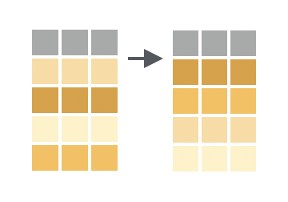
Solution
mpg %>%
arrange(desc(displ))## # A tibble: 234 x 11
## manufacturer model displ year cyl trans drv cty hwy fl class
## <chr> <chr> <dbl> <int> <int> <chr> <chr> <int> <int> <chr> <chr>
## 1 chevrolet corv… 7 2008 8 manu… r 15 24 p 2sea…
## 2 chevrolet k150… 6.5 1999 8 auto… 4 14 17 d suv
## 3 chevrolet corv… 6.2 2008 8 manu… r 16 26 p 2sea…
## 4 chevrolet corv… 6.2 2008 8 auto… r 15 25 p 2sea…
## 5 jeep gran… 6.1 2008 8 auto… 4 11 14 p suv
## 6 chevrolet c150… 6 2008 8 auto… r 12 17 r suv
## 7 dodge dura… 5.9 1999 8 auto… 4 11 15 r suv
## 8 dodge ram … 5.9 1999 8 auto… 4 11 15 r pick…
## 9 chevrolet c150… 5.7 1999 8 auto… r 13 17 r suv
## 10 chevrolet corv… 5.7 1999 8 manu… r 16 26 p 2sea…
## # … with 224 more rowsDiscussion
Place desc() around a column name to cause arrange() to sort by descending values of that column. You can use desc() for tie-breaker columns as well (compare line nine below to the table above).
mpg %>%
arrange(desc(displ), desc(cty))## # A tibble: 234 x 11
## manufacturer model displ year cyl trans drv cty hwy fl class
## <chr> <chr> <dbl> <int> <int> <chr> <chr> <int> <int> <chr> <chr>
## 1 chevrolet corv… 7 2008 8 manu… r 15 24 p 2sea…
## 2 chevrolet k150… 6.5 1999 8 auto… 4 14 17 d suv
## 3 chevrolet corv… 6.2 2008 8 manu… r 16 26 p 2sea…
## 4 chevrolet corv… 6.2 2008 8 auto… r 15 25 p 2sea…
## 5 jeep gran… 6.1 2008 8 auto… 4 11 14 p suv
## 6 chevrolet c150… 6 2008 8 auto… r 12 17 r suv
## 7 dodge dura… 5.9 1999 8 auto… 4 11 15 r suv
## 8 dodge ram … 5.9 1999 8 auto… 4 11 15 r pick…
## 9 chevrolet corv… 5.7 1999 8 manu… r 16 26 p 2sea…
## 10 chevrolet corv… 5.7 1999 8 auto… r 15 23 p 2sea…
## # … with 224 more rows4.3 Filter rows with a logical test
You want to filter your table to just the rows that meet a specific condition.
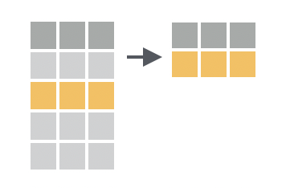
Solution
mpg %>%
filter(model == "jetta")## # A tibble: 9 x 11
## manufacturer model displ year cyl trans drv cty hwy fl class
## <chr> <chr> <dbl> <int> <int> <chr> <chr> <int> <int> <chr> <chr>
## 1 volkswagen jetta 1.9 1999 4 manua… f 33 44 d comp…
## 2 volkswagen jetta 2 1999 4 manua… f 21 29 r comp…
## 3 volkswagen jetta 2 1999 4 auto(… f 19 26 r comp…
## 4 volkswagen jetta 2 2008 4 auto(… f 22 29 p comp…
## 5 volkswagen jetta 2 2008 4 manua… f 21 29 p comp…
## 6 volkswagen jetta 2.5 2008 5 auto(… f 21 29 r comp…
## 7 volkswagen jetta 2.5 2008 5 manua… f 21 29 r comp…
## 8 volkswagen jetta 2.8 1999 6 auto(… f 16 23 r comp…
## 9 volkswagen jetta 2.8 1999 6 manua… f 17 24 r comp…Discussion
filter() takes a logical test and returns the rows for which the logical test returns TRUE. filter() will match column names that appear within the logical test to columns in your data frame.
If you provide multiple logical tests, filter() will combine them with an AND operator (&):
mpg %>%
filter(model == "jetta", year == 1999)Use R’s boolean operators, like |and !, to create other combinations of logical tests to pass to filter. See the help pages for ?Comparison and ?Logic to learn more about writing logical tests in R.
4.4 Select columns by name
You want to return a “subset” of columns from your data frame by listing the name of each column to return.
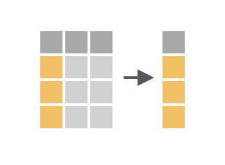
Solution
table1 %>%
select(country, year, cases)## # A tibble: 6 x 3
## country year cases
## <chr> <int> <int>
## 1 Afghanistan 1999 745
## 2 Afghanistan 2000 2666
## 3 Brazil 1999 37737
## 4 Brazil 2000 80488
## 5 China 1999 212258
## 6 China 2000 213766Discussion
select() returns a new data frame that includes each column passed to select(). Repeat a name to include the column twice.
4.5 Drop columns by name
You want to return a “subset” of columns from your data frame by listing the name of each column to drop.
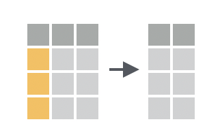
Solution
table1 %>%
select(-c(population, year))## # A tibble: 6 x 2
## country cases
## <chr> <int>
## 1 Afghanistan 745
## 2 Afghanistan 2666
## 3 Brazil 37737
## 4 Brazil 80488
## 5 China 212258
## 6 China 213766Discussion
If you use a - before a column name, select() will return every column in the data frame except that column. To drop more than one column at a time, group the columns into a vector preceded by -.
4.6 Select a range of columns
You want to return two columns from a data frame as well as every column that appears between them.
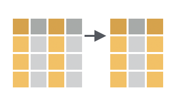
Solution
table1 %>%
select(country:cases)## # A tibble: 6 x 3
## country year cases
## <chr> <int> <int>
## 1 Afghanistan 1999 745
## 2 Afghanistan 2000 2666
## 3 Brazil 1999 37737
## 4 Brazil 2000 80488
## 5 China 1999 212258
## 6 China 2000 213766Discussion
If you combine two column names with a :, select() will return both columns and every column that appears between them in the data frame.
4.7 Select columns by integer position
You want to return a “subset” of columns from your data frame by listing the position of each column to return.
Solution
table1 %>%
select(1, 2, 4)## # A tibble: 6 x 3
## country year population
## <chr> <int> <int>
## 1 Afghanistan 1999 19987071
## 2 Afghanistan 2000 20595360
## 3 Brazil 1999 172006362
## 4 Brazil 2000 174504898
## 5 China 1999 1272915272
## 6 China 2000 1280428583Discussion
select() interprets the whole number n as the _n_th column in the data set. You can combine numbers with - and : inside of select() as well.
4.8 Select columns by start of name
You want to return evey column in your data that begins with a specific string.
Solution
table1 %>%
select(starts_with("c"))## # A tibble: 6 x 2
## country cases
## <chr> <int>
## 1 Afghanistan 745
## 2 Afghanistan 2666
## 3 Brazil 37737
## 4 Brazil 80488
## 5 China 212258
## 6 China 2137664.9 Select columns by end of name
You want to return evey column in your data that ends with a specific string.
Solution
table1 %>%
select(ends_with("tion"))## # A tibble: 6 x 1
## population
## <int>
## 1 19987071
## 2 20595360
## 3 172006362
## 4 174504898
## 5 1272915272
## 6 12804285834.10 Select columns by string in name
You want to return evey column in your data whose name contains a specific string or regular expression.
Solution
table1 %>%
select(matches("o.*u"))## # A tibble: 6 x 2
## country population
## <chr> <int>
## 1 Afghanistan 19987071
## 2 Afghanistan 20595360
## 3 Brazil 172006362
## 4 Brazil 174504898
## 5 China 1272915272
## 6 China 1280428583Discussion
o.*u is a regular expression that matches an o followed by a u with any number of characters in between. country and population are returned because the names country and population each contain an o followed (at any distance) by a u.
See the help page for ?regex to learn more about regular expressions in R.
4.11 Reorder columns
You want to return all of the columns in the original data frame in a new order.
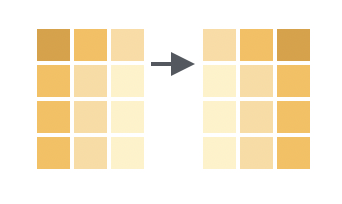
Solution
table1 %>%
select(country, year, population, cases)## # A tibble: 6 x 4
## country year population cases
## <chr> <int> <int> <int>
## 1 Afghanistan 1999 19987071 745
## 2 Afghanistan 2000 20595360 2666
## 3 Brazil 1999 172006362 37737
## 4 Brazil 2000 174504898 80488
## 5 China 1999 1272915272 212258
## 6 China 2000 1280428583 213766Discussion
Use select() to select all of the columns. List the column names in the new order.
4.12 Reorder columns without naming each
You want to reorder some of the columns in the original data frame, but you don’t care about the order for other columns, and you may have too many columns to name them each individually.
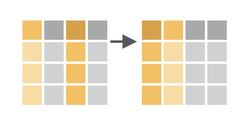
Solution
table1 %>%
select(country, year, everything())## # A tibble: 6 x 4
## country year cases population
## <chr> <int> <int> <int>
## 1 Afghanistan 1999 745 19987071
## 2 Afghanistan 2000 2666 20595360
## 3 Brazil 1999 37737 172006362
## 4 Brazil 2000 80488 174504898
## 5 China 1999 212258 1272915272
## 6 China 2000 213766 1280428583Discussion
Use everything() within select() to select all of the columns in the order they are named: all columns are kept, and no columns are duplicated. Using everything() preserves the original ordering of the original (unnamed) columns.
4.13 Rename columns
You want to rename one or more columns in your data frame, retaining the rest.
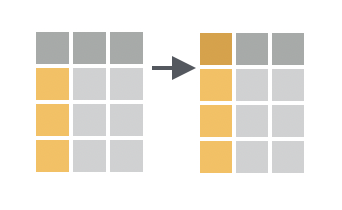
Solution
table1 %>%
rename(state = country, date = year)## # A tibble: 6 x 4
## state date cases population
## <chr> <int> <int> <int>
## 1 Afghanistan 1999 745 19987071
## 2 Afghanistan 2000 2666 20595360
## 3 Brazil 1999 37737 172006362
## 4 Brazil 2000 80488 174504898
## 5 China 1999 212258 1272915272
## 6 China 2000 213766 1280428583Discussion
For each column to be renamed, type a new name for the column and set it equal to the old name for the column.
4.14 Return the contents of a column as a vector
You want to return the contents of a single column as a vector, not as a data frame with one column.
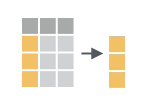
Solution
table1 %>%
pull(cases)## [1] 745 2666 37737 80488 212258 213766Discussion
pull() comes in the dplyr package. It does the equivalent of pluck() in the purrr package; however, pull() is designed to work specifically with data frames. pluck() is designed to work with all types of lists.
You can also pull a column by integer position:
table1 %>%
pull(3)## [1] 745 2666 37737 80488 212258 2137664.15 Mutate data (Add new variables)
You want to compute one or more new variables and add them to your table as columns.
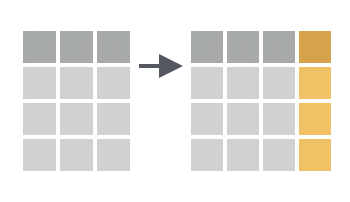
Solution
table1 %>%
mutate(rate = cases/population, percent = rate * 100)## # A tibble: 6 x 6
## country year cases population rate percent
## <chr> <int> <int> <int> <dbl> <dbl>
## 1 Afghanistan 1999 745 19987071 0.0000373 0.00373
## 2 Afghanistan 2000 2666 20595360 0.000129 0.0129
## 3 Brazil 1999 37737 172006362 0.000219 0.0219
## 4 Brazil 2000 80488 174504898 0.000461 0.0461
## 5 China 1999 212258 1272915272 0.000167 0.0167
## 6 China 2000 213766 1280428583 0.000167 0.0167Discussion
To use mutate(), pass it a series of names followed by R expressions. mutate() will return a copy of your table that contains one column for each name that you pass to mutate(). The name of the column will be the name that you passed to mutate(); the contents of the column will be the result of the R expression that you assigned to the name. The R expression should always return a vector of the same length as the other columns in the data frame,1 because mutate() will add the vector as a new column.
In other words, mutate() is intended to be used with vectorized functions, which are functions that take a vector of values as input and return a new vector of values as output (e.g abs(), round(), and all of R’s math operations).
mutate() will build the columns in the order that you define them. As a result, you may use a new column in the column definitions that follow it.
Dropping the original data
Use transmute() to return only the new columns that mutate() would create.
table1 %>%
transmute(rate = cases/population, percent = rate * 100)## # A tibble: 6 x 2
## rate percent
## <dbl> <dbl>
## 1 0.0000373 0.00373
## 2 0.000129 0.0129
## 3 0.000219 0.0219
## 4 0.000461 0.0461
## 5 0.000167 0.0167
## 6 0.000167 0.01674.16 Summarise data
You want to compute summary statistics for the data in your data frame.
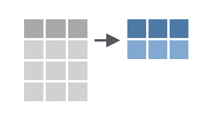
Solution
table1 %>%
summarise(total_cases = sum(cases), max_rate = max(cases/population))## # A tibble: 1 x 2
## total_cases max_rate
## <int> <dbl>
## 1 547660 0.000461Discussion
To use summarise(), pass it a series of names followed by R expressions. summarise() will return a new tibble that contains one column for each name that you pass to summarise(). The name of the column will be the name that you passed to summarise(); the contents of the column will be the result of the R expression that you assigned to the name. The R expression should always return a single value because summarise() will always return a 1 x n tibble.2
In other words, summarise() is intended to be used with summary functions, which are functions that take a vector of values as input and return a single value as output (e.g sum(), max(), mean()). In normal use, summarise() will pass each function a column (i.e. vector) of values and expect a single value in return.
summarize() is an alias for summarise().
4.17 Group data
You want to assign the rows of your data to subgroups based on their shared values or their shared combinations of values.
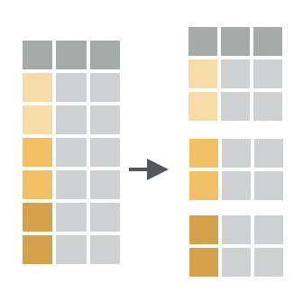
You want to do this as the first step in a multi-step analysis, because grouping data doesn’t do anything noticeable until you pass the grouped data to a tidyverse function.
Solution
table1 %>%
group_by(country)## # A tibble: 6 x 4
## # Groups: country [3]
## country year cases population
## <chr> <int> <int> <int>
## 1 Afghanistan 1999 745 19987071
## 2 Afghanistan 2000 2666 20595360
## 3 Brazil 1999 37737 172006362
## 4 Brazil 2000 80488 174504898
## 5 China 1999 212258 1272915272
## 6 China 2000 213766 1280428583Discussion
group_by() converts your data into a grouped tibble, which is a tibble subclass that indicates in its attributes3 which rows belong to which group.
To group rows by the values of a single column, pass group_by() a single column name. To group rows by the unique combination of values across multiple columns, pass group_by() the names of two or more columns.
Group-wise operations
Where appropriate, tidyverse functions recognize grouped tibbles. Tidyverse functions:
- treat each group as a distinct data set
- execute their code separately on each group
- combine the results into a new data frame that contains the same grouping characteristics.
summarise()is a slight exception, see below.
4.18 Summarise data by groups
You want to compute summary statistics for different subgroups of data in your grouped data frame.
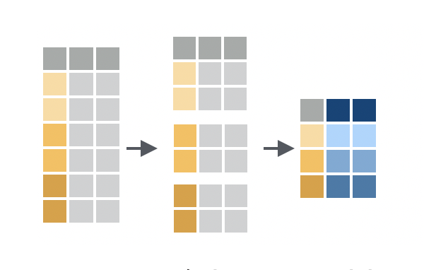
Solution
table1 %>%
group_by(country) %>%
summarise(total_cases = sum(cases), max_rate = max(cases/population))## # A tibble: 3 x 3
## country total_cases max_rate
## <chr> <int> <dbl>
## 1 Afghanistan 3411 0.000129
## 2 Brazil 118225 0.000461
## 3 China 426024 0.000167Discussion
Group-wise summaries are the most common use of grouped data. When you apply summarise() to grouped data, summarise() will:
- treat each group as a distinct data set
- compute separate statistics for each group
combine the results into a new tibble
Since this is easier to see than explain, you may want to study the diagram and result above.
summarise() gives grouped data special treatment in two ways:
summarise()will retain the column(s) that were used to group the data in its result. This makes the output of grouped summaries interpretable.summarise()will shorten the grouping criteria of its result by one column name (the last column name). Compare this to other tidyverse functions which give their result the same grouping criteria as their input.For example, if the input of
summarise()is grouped bycountryandyear, the output ofsummarise()will only be grouped bycountry. Because of this, you can callsummarise()repeatedly to view progressively higher level summaries:
table1 %>%
group_by(country, year) %>%
summarise(total_cases = sum(cases))## # A tibble: 6 x 3
## # Groups: country [?]
## country year total_cases
## <chr> <int> <int>
## 1 Afghanistan 1999 745
## 2 Afghanistan 2000 2666
## 3 Brazil 1999 37737
## 4 Brazil 2000 80488
## 5 China 1999 212258
## 6 China 2000 213766table1 %>%
group_by(country, year) %>%
summarise(total_cases = sum(cases)) %>%
summarise(total_cases = sum(total_cases))## # A tibble: 3 x 2
## country total_cases
## <chr> <int>
## 1 Afghanistan 3411
## 2 Brazil 118225
## 3 China 426024table1 %>%
group_by(country, year) %>%
summarise(total_cases = sum(cases)) %>%
summarise(total_cases = sum(total_cases)) %>%
summarise(total_cases = sum(total_cases))## # A tibble: 1 x 1
## total_cases
## <int>
## 1 5476604.19 Nest a data frame
You want to move portions of your data frame into their own tables, and then store those tables in cells in your original data frame.
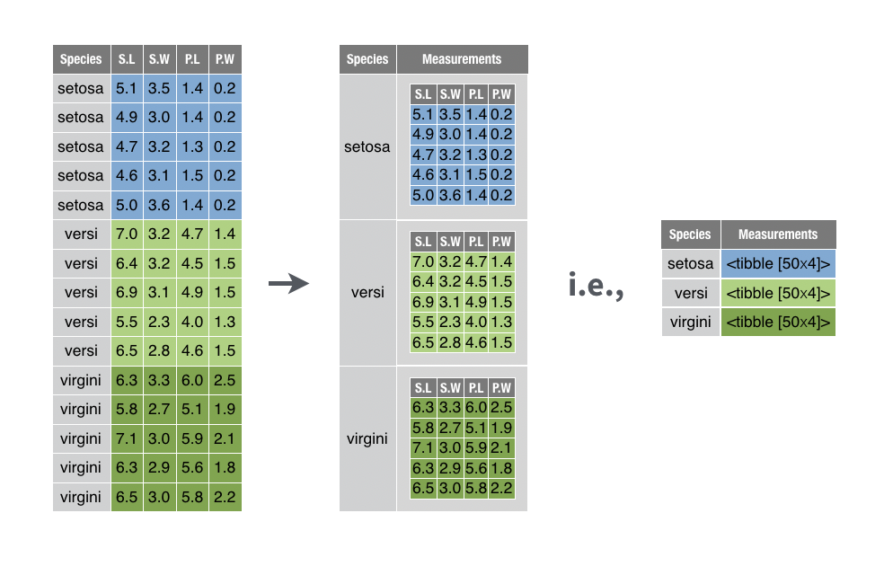
This lets you manipulate the collection of tables with filter(), select(), arrange(), and so on, as you would normally manipulate a collection of values.
Solution
iris %>%
group_by(Species) %>%
nest(.key = "Measurements")## # A tibble: 3 x 2
## Species Measurements
## <fct> <list>
## 1 setosa <tibble [50 × 4]>
## 2 versicolor <tibble [50 × 4]>
## 3 virginica <tibble [50 × 4]>Discussion
nest() comes in the tidyr package. You can use it to nest portions of your data frame in two ways:
Pass
nest()a grouped data frame made withdplyr::group_by()(as above).nest()will create a separate table for each group. The table will contain every row in the group and every column that is not part of the grouping criteria.Pass
nest()an ungrouped data frame and then specify which columns to nest.nest()will perform an implicit grouping on the combination of values that appear across the remaining columns, and then create a separate table for each implied grouping.You can specify columns with the same syntax and helpers that you would use with dplyr’s
select()function. So, for example, the two calls below will produce the same result as the solution above.iris %>% nest(Sepal.Width, Sepal.Length, Petal.Width, Petal.Length, .key = "Measurements") %>% as_tibble() iris %>% nest(-Species, .key = "Measurements") %>% as_tibble()
nest() preserves class, which means that nest() will return a data frame if its input is a data frame and a tibble if its input is a tibble. In each case, nest() will add the sub-tables to the result as a list-column. Since, list-columns are much easier to view in a tibble than a data frame, I recommend that you convert the result of nest() to a tibble when necessary.
Use the .key argument to provide a name for the new list-column.
4.20 Combine transform recipes
You want to transform the structure of a table, and you want to use the data within the table to do it. This is the sort of thing you do everytime you call summarise() or mutate().
Solution
See the discussion.
Discussion
When you transform a data frame, you often work with several functions:
A function that transforms the table itself, adding columns to its structure, or building a whole new table to hold results.
A function that transforms the values held in the table. Since values are always held in vectors (here column vectors), this function transforms a vector to create a new vector that can then be added to the empty column or table created by function 1.
A function that mediates between 1 and 2 if the values are embedded in a list-column, which is a list.
The most concise way to learn how to combine these functions is to learn about the functions in isolation, and to then have the functions call each other as necessary.
An example
smiths contains measurements that describe two fictional people: John and Mary Smith.
smiths## # A tibble: 2 x 5
## subject time age weight height
## <chr> <dbl> <dbl> <dbl> <dbl>
## 1 John Smith 1 33 90 1.87
## 2 Mary Smith 1 NA NA 1.54To round the height value for each person, you would need two functions:
round()which can round the values of the data vector stored insmiths$height.
round(smiths$height)## [1] 2 2mutate()which can add the results to a copy of thesmithstable.
smiths %>%
mutate(height_int = round(height))## # A tibble: 2 x 6
## subject time age weight height height_int
## <chr> <dbl> <dbl> <dbl> <dbl> <dbl>
## 1 John Smith 1 33 90 1.87 2
## 2 Mary Smith 1 NA NA 1.54 2round() works with data vectors. mutate() works with tables. Together they create the table you want.
An example that uses list columns
sepals is a tibble that I made for this example.4 It contains sepal length measurements for three species of flowers. The measurements are stored in a list-column named lengths.
sepals## # A tibble: 3 x 2
## Species lengths
## <fct> <list>
## 1 setosa <dbl [50]>
## 2 versicolor <dbl [50]>
## 3 virginica <dbl [50]>Each cell in lengths contains a data vector of 50 sepal lengths.
# For example, the first cell of lengths
sepals[[1, 2]]## [1] 5.1 4.9 4.7 4.6 5.0 5.4 4.6 5.0 4.4 4.9 5.4 4.8 4.8 4.3 5.8 5.7 5.4
## [18] 5.1 5.7 5.1 5.4 5.1 4.6 5.1 4.8 5.0 5.0 5.2 5.2 4.7 4.8 5.4 5.2 5.5
## [35] 4.9 5.0 5.5 4.9 4.4 5.1 5.0 4.5 4.4 5.0 5.1 4.8 5.1 4.6 5.3 5.0To add the average sepal length for each species to the table, you would need three functions:
mean()which can compute the average of a data vector inlengthsmean(sepals[[1, 2]])## [1] 5.006map_dbl()which can applymean()to each cell oflengths, which is a list-column.map_dbl(sepals$lengths, mean)## [1] 5.006 5.936 6.588mutate()which can add the results to a copy of thesepalstable.sepals %>% mutate(avg_length = map_dbl(lengths, mean))## # A tibble: 3 x 3 ## Species lengths avg_length ## <fct> <list> <dbl> ## 1 setosa <dbl [50]> 5.01 ## 2 versicolor <dbl [50]> 5.94 ## 3 virginica <dbl [50]> 6.59
mean() works with data vectors. map_dbl() works with list-columns. mutate() works with tables. Together they create the table you want.
4.21 Join data sets by common column(s)
You want to combine two data frames into a single data frame, such that observations in the first data frame are matched to the corresponding observations in the second data frame, even if those observations do not appear in the same order.
Your data is structured in such a way that you can match observations by the values of one or more ID columns that appear in both data frames.
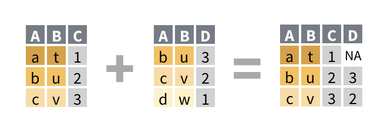
For example, you would like to combine band_members and band_instruments into a single data frame based on the values of the name column. The new data frame will correctly list who plays what.
band_members## # A tibble: 3 x 2
## name band
## <chr> <chr>
## 1 Mick Stones
## 2 John Beatles
## 3 Paul Beatlesband_instruments## # A tibble: 3 x 2
## name plays
## <chr> <chr>
## 1 John guitar
## 2 Paul bass
## 3 Keith guitarSolution
band_members %>%
left_join(band_instruments, by = "name")## # A tibble: 3 x 3
## name band plays
## <chr> <chr> <chr>
## 1 Mick Stones <NA>
## 2 John Beatles guitar
## 3 Paul Beatles bassDiscussion
There are four ways to join content from one data frame to another. Each uses a different function name, but the same arguments and syntax. Of these, left_join() is the most common.
left_join()drops any row in the second data set does not match a row in the first data set. (It retains every row in the first data set, which appears on the left when you type the function call, hence the name).right_join()drops any row in the first data set does not match a row in the first data set.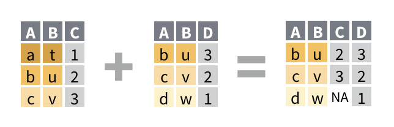
band_members %>% right_join(band_instruments, by = "name")## # A tibble: 3 x 3 ## name band plays ## <chr> <chr> <chr> ## 1 John Beatles guitar ## 2 Paul Beatles bass ## 3 Keith <NA> guitarinner_join()drops any row in either data set that does not have a match in both data sets, i.e.inner_join()does not retain any incomplete rows in the final result.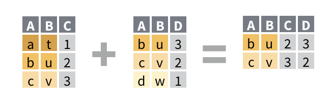
band_members %>% inner_join(band_instruments, by = "name")## # A tibble: 2 x 3 ## name band plays ## <chr> <chr> <chr> ## 1 John Beatles guitar ## 2 Paul Beatles bassfull_join()retains every row from both data sets; it is the only join guaranteed to retain all of the original data.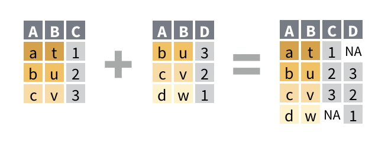
band_members %>% full_join(band_instruments, by = "name")## # A tibble: 4 x 3 ## name band plays ## <chr> <chr> <chr> ## 1 Mick Stones <NA> ## 2 John Beatles guitar ## 3 Paul Beatles bass ## 4 Keith <NA> guitar
Mutating joins
left_join(), right_join(), inner_join(), and full_join() are collectively called mutating joins because they add additional columns to a copy of a data set, as does mutate().
Specifying column(s) to join on
By default, the mutating join functions will join on the set of columns whose names appear in both data frames. The join functions will match each row in the first data frame to the row in the second data frame that has the same combination of values across the commonly named columns.
To override the default, add a by argument to your join function. Pass it the name(s) of the column(s) to join on as a character vector. These names should appear in both data sets. R will join together rows that contain the same combination of values in these columns, ignoring the values in other columns, even if those columns share a name with a column in the other data frame.
table1 %>%
left_join(table3, by = c("country", "year"))## # A tibble: 6 x 5
## country year cases population rate
## <chr> <int> <int> <int> <chr>
## 1 Afghanistan 1999 745 19987071 745/19987071
## 2 Afghanistan 2000 2666 20595360 2666/20595360
## 3 Brazil 1999 37737 172006362 37737/172006362
## 4 Brazil 2000 80488 174504898 80488/174504898
## 5 China 1999 212258 1272915272 212258/1272915272
## 6 China 2000 213766 1280428583 213766/1280428583Joining when ID names do not match
Often an ID variable will appear with a different name in each data frame. For example, the name variable appears as artist in band_instruments2.
band_instruments2## # A tibble: 3 x 2
## artist plays
## <chr> <chr>
## 1 John guitar
## 2 Paul bass
## 3 Keith guitarTo join by two columns that have different names, pass by a named character vector: each element of the vector should be a pair of names, e.g.
c(name1 = "name2", name4 = "name4")For each element,
- Write the name of the column that appears in the first data frame
- Write an equals sign
- Write the name of the matching column that appears in the second data set.
Only the second name needs to be surrounded with quotation marks. The join will match the corresponding columns across data frames.
band_members %>%
left_join(band_instruments2, by = c(name = "artist"))## # A tibble: 3 x 3
## name band plays
## <chr> <chr> <chr>
## 1 Mick Stones <NA>
## 2 John Beatles guitar
## 3 Paul Beatles bassR will use the column name(s) from the first data set in the result.
Suffixes
Joins will append the suffixes .x and .y to any columns that have the same name in both data sets but are not used to join on. The columns from the first data set are suffixed with .x, the columns from the second with .y.
table4a %>%
left_join(table4b, by = "country")## # A tibble: 3 x 5
## country `1999.x` `2000.x` `1999.y` `2000.y`
## <chr> <int> <int> <int> <int>
## 1 Afghanistan 745 2666 19987071 20595360
## 2 Brazil 37737 80488 172006362 174504898
## 3 China 212258 213766 1272915272 1280428583To use different suffixes, supply a character vector of length two as a suffix argument.
table4a %>%
left_join(table4b, by = "country", suffix = c("_cases", "_pop"))## # A tibble: 3 x 5
## country `1999_cases` `2000_cases` `1999_pop` `2000_pop`
## <chr> <int> <int> <int> <int>
## 1 Afghanistan 745 2666 19987071 20595360
## 2 Brazil 37737 80488 172006362 174504898
## 3 China 212258 213766 1272915272 12804285834.22 Find rows that have a match in another data set
You want to find the rows in one data frame that have a match in a second data frame. By match, you mean that both rows refer to the same observation, even if they include different measurements.
Your data is structured in such a way that you can match rows by the values of one or more ID columns that appear in both data frames.
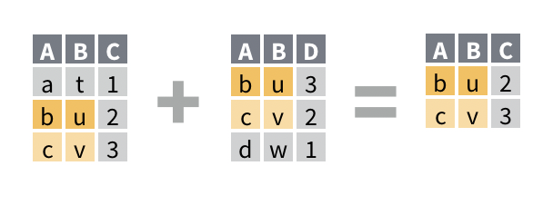
For example, you would like to return the rows of band_members that have a corresponding row in band_instruments. The new data frame will be a reduced version of band_members that does not contain any new columns.
band_members## # A tibble: 3 x 2
## name band
## <chr> <chr>
## 1 Mick Stones
## 2 John Beatles
## 3 Paul Beatlesband_instruments## # A tibble: 3 x 2
## name plays
## <chr> <chr>
## 1 John guitar
## 2 Paul bass
## 3 Keith guitarSolution
band_members %>%
semi_join(band_instruments, by = "name")## # A tibble: 2 x 2
## name band
## <chr> <chr>
## 1 John Beatles
## 2 Paul BeatlesDiscussion
semi_join() returns only the rows of the first data frame that have a match in the second data frame. A match is a row that would be combined with the first row by a mutating join. This makes semi_join() a useful way to preview which rows will be retained by a mutating join.
semi_join() uses the same syntax as mutating joins. Learn more in Specifying column(s) to join on and Joining when ID names do not match.
Filtering joins
semi_join() and anti_join() (see below) are called filtering joins because they filter a data frame to only those rows that meet a specific criteria, as does filter().
Unlike mutating joins, filtering joins do not add columns from the second data frame to the first. Instead, they use the second data frame to identify rows to return from the first.
When you need to filter on a complicated set of conditions, filtering joins can be more effective than filter(): use tribble() to create a data frame to filter against with a filtering join.
4.23 Find rows that do not have a match in another data set
You want to find the rows in one data frame that do not have a match in a second data frame. By match, you mean that both rows refer to the same observation, even if they include different measurements.
Your data is structured in such a way that you can match rows by the values of one or more ID columns that appear in both data frames.
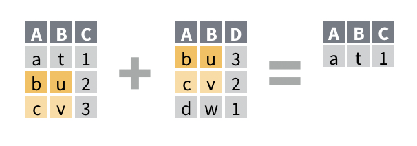
For example, you would like to return the rows of band_members that do not have a corresponding row in band_instruments. The new data frame will be a reduced version of band_members that does not contain any new columns.
band_members## # A tibble: 3 x 2
## name band
## <chr> <chr>
## 1 Mick Stones
## 2 John Beatles
## 3 Paul Beatlesband_instruments## # A tibble: 3 x 2
## name plays
## <chr> <chr>
## 1 John guitar
## 2 Paul bass
## 3 Keith guitarSolution
band_members %>%
anti_join(band_instruments, by = "name")## # A tibble: 1 x 2
## name band
## <chr> <chr>
## 1 Mick StonesDiscussion
anti_join() returns only the rows of the first data frame that do not have a match in the second data frame. A match is a row that would be combined with the first row by a mutating join. This makes ant_join() a useful way to debug a mutating join.
anti_join() provides a useful way to check for typos that could interfere with a mutating join; these rows will not have a match in the second data frame (assuming that the typo does not also appear in the second data frame).
anti_join() also highlights entries that are coded in different ways across data frames, such as "North_Carolina" and "North Carolina".
anti_join() uses the same syntax as mutating joins. Learn more in Specifying column(s) to join on and Joining when ID names do not match. Along with semi_join(), anti_join() is one of the two Filtering joins.
Or one that can be made the same length with R’s recycling rules, e.g. a vector of length one.↩
summarise()will return a larger tibble if you pair it withgroup_by().↩Attributes are metadata associated with a data structure. R can see an object’s attributes, but users typically cannot.↩
I made this data frame with the code
sepals <- iris %>% group_by(Species) %>% summarise(lengths = list(Sepal.Length))↩